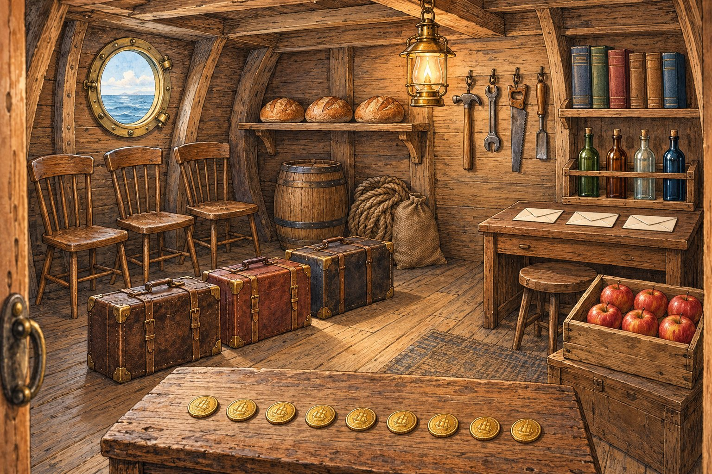
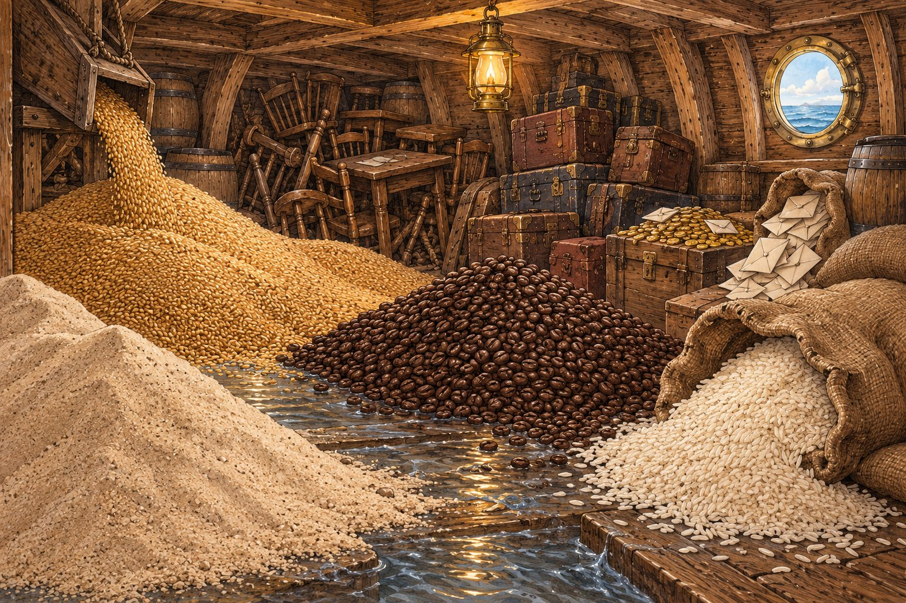
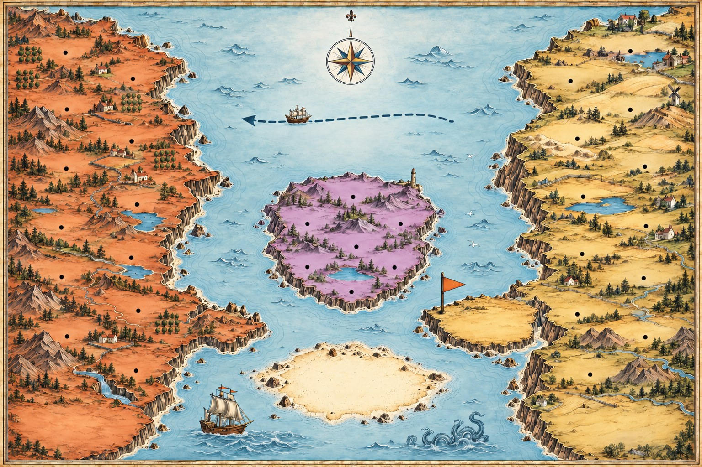

Countania & Uncountania
Two shores face each other across a strait. On the west live the things you count: a chair, three chairs, many chairs. On the east lives the stuff you measure: furniture, much furniture, and never an -s. Every harbour on the east shore has a partner directly across the water, so when a word catches you out, the way back is straight ahead. Start below deck, in the ship.
Go below deck![An illustrated sea chart. On the west, an orange land called Countania, with harbours named after countable nouns: Job Harbour, Fact Point, Tip Head, Suitcase Sands, Chair Crag and others. On the east, a golden land called Uncountania, whose harbours face them at the same latitude: Work Harbour, Information Point, Advice Head, Luggage Sands, Furniture Crag. In the strait lies a lilac island, Double Isle (both shores, two meanings: Coffee Cove, Chicken Crag, Paper Point). A ferry runs west, labelled a piece of advice, a bottle of water, a slice of bread. A spur of Uncountania flies an -S flag: the False Cape, the news is, maths is. A sandbank in the south, the Shallows, holds some, any, a lot of, plenty of.](sailing-the-seas-countania/hero.jpg)
Two rooms in one ship
Before the chart, the cargo. In the store cabin everything stands apart, and you can count it. In the hold everything is poured, piled or spilled, and you can only measure it. Look at what the two rooms share: chairs in one are furniture in the other, suitcases are luggage, coins are money, letters are mail. The same cargo, a different word.

three chairsthree loavesfour toolssix booksfour bottlesthree lettersthree suitcasesnine coinssix apples
grainsandcoffeericewaterfurnitureluggagemoneymailThe same cargo, a different word
The cabin's word is the thing; the hold's word is the whole lot of it. Only the left-hand word takes a and -s.
| In the cabin: count it | In the hold: measure it |
|---|---|
| three chairs | furniture |
| three suitcases | luggage |
| nine coins | money |
| three letters |
There are three chairs in the cabin, and a lot of furniture in the hold.
BOTH The galley where the two meet
Between the cabin and the hold is the galley, and here every word has two lives. On the table stands one thing; beside it, the stuff it is made of.
- a coffee beside coffee
- a chicken beside chicken
- a paper beside paper
- a glass beside glass
- a cake beside cake
- a light beside light
The single thing counts; the stuff does not. These are the words of Double Isle, on the chart below.
Countania: count it
A countable noun names a thing with edges: you can point at one, and put a number in front of it. That gives it four habits, and once you know them you can spot a Countania word anywhere.
A or an for one
One of anything here takes a or an: a chair, a job, an apple, an idea.
One alone is never bare
A singular countable noun needs a word in front: a, the, my, this, every. I need chair is not English; I need a chair is.
Add -s for more than one
Most nouns add -s or -es: chairs, boxes. A few change inside: man → men, child → children, foot → feet, person → people.
Numbers go straight in
two trips, ten tools, a hundred steps. Nothing in between: never two pieces of trip.
Many, a few, few
How many? asks for a number. A few means some; few means not enough.
Fewer, not less
For fewer things, careful English says fewer: fewer storms, fewer mistakes. Less is common in speech, but exams mark it down.
Twelve pairs, straight across the water
On the chart every harbour on the east shore faces its partner on the west, with the same surname. When a word from the right-hand column will not take a or -s, its partner on the left will.
| Countania: count it | Uncountania: measure it | The mistake |
|---|---|---|
| a job · two jobs | work | a work, works (but a work of art is a painting) |
| a fact · facts | information | an information, informations |
| a tip · tips | advice | an advice, advices |
| a suitcase · suitcases | luggage | a luggage, luggages |
| a chair · chairs | furniture | a furniture, furnitures |
| a trip · trips | travel | a travel (but his travels, his journeys) |
| a coin · coins | money | a money, moneys |
| a song · songs | music | a music, musics |
| a tool · tools | equipment | an equipment, equipments |
| a storm · storms | weather | a weather, a bad weather |
| a task · tasks | homework | a homework, homeworks |
| a step · steps | progress | a progress, progresses |
Uncountania: measure it
An uncountable noun names stuff with no edges: a liquid, a material, an idea, or a whole category of things under one name. You cannot put a number in front of it, so it has none of Countania's habits, and four of its own.
No a, no an
Never an advice, never a furniture. Use it bare, or with some, the, my.
No -s, ever
Informations, advices, luggages, furnitures, equipments are some of the commonest mistakes in English. In many languages these words do have a plural; in English they do not.
The verb is singular
The noun is one mass, so the verb is is, was, has: the luggage is, the money was.
Much, a little, little
How much? asks for an amount. Much belongs in questions and negatives; in a plain statement say a lot of: a lot of money, not much money.
What lives here: stuff, not things
Liquids and gases (water, air), materials (wood, glass, sand), grains (rice, flour), ideas (advice, fun, luck), activities (work, travel, research) and whole categories (furniture, luggage, money).
Take the ferry to count it
To count stuff, count a container or a unit of it: a piece of advice, two pieces of furniture, a bottle of water, a slice of bread. The unit takes the -s; the stuff never does.
The piece-of ferry: one crossing, west only
The ferry carries a word from Uncountania into Countania by putting a countable unit in front of it. A piece of is the all-purpose ticket; the others fit their cargo.
| The unit | The stuff it carries |
|---|---|
| a piece of | advice, information, news, furniture, luggage, equipment, music, work |
| a bottle of · a glass of | water, milk, wine, juice |
| a cup of · a mug of | coffee, tea, hot chocolate |
| a slice of · a loaf of | bread, cake, cheese, ham |
| a bar of | chocolate, soap, gold |
| a bag of · a sack of | rice, flour, sand, coal |
| a grain of | rice, sand, salt, truth |
| a bit of | luck, help, time, fun: the informal ticket |
Read the chart
Click a land and its list lights up below. Every harbour is named after a noun. Switch the chart to just the nouns to see them bare, then to counted to see how each shore counts: a number on the west, the ferry's piece of on the east. Read straight across: each pair shares a surname.

Drag the chart sideways to reach the east shore.
Countania · count it
The strait · both, or neither
Uncountania · measure it
Double Isle: both shores, two meanings
The lilac island in the strait belongs to both shores. Its nouns are countable with one meaning and uncountable with another, and the a or the -s tells the listener which one you mean.
| Noun | Countable: a thing | Uncountable: the stuff |
|---|---|---|
| coffee | a coffee: a cup of it Two coffees, please. | coffee: the drink, the beans Coffee keeps me awake. |
| chicken | a chicken: the living bird We keep six chickens. | chicken: the meat We had chicken for dinner. |
| paper | a paper: a newspaper, or an essay She reads a paper every day. | paper: the material Wrap it in paper. |
| room | a room: a space with walls The ship has ten rooms. | room: space Is there room for one more? |
| glass | a glass: you drink from it Two glasses of water. | glass: the material The porthole is made of glass. |
| hair | a hair: one single strand There's a hair in my soup. | hair: all of it on your head She has long hair. |
| time | a time: an occasion I've been there three times. | time: minutes and hours We don't have much time. |
The test is the same everywhere on the island: if you could put a number in front of it in this sentence, it is countable here. Three coffees works in a café; three coffees does not work for the beans in the hold.
Words that work on either shore
South of Double Isle the water shoals. The words in the Shallows sail both ways: some chairs and some furniture, a lot of coins and a lot of money. Learn these first, and you have a safe word for every noun. The words on the two shores are the ones that only fit one kind.
Quantity words, shore by shore
The middle column is the Shallows. The outer columns only fit their own shore.
| Countania only | Either shore | Uncountania only |
|---|---|---|
| many | a lot of · lots of | much |
| a few | some | a little |
| few | any | little |
| fewer | more · most | less |
| several | enough | a great deal of |
| a number of | plenty of · no | an amount of |
Some chairs, some furniture; a lot of coins, a lot of money.
The False Cape. A spur of the east shore flies an -S flag it has no right to. These words end in -s and look plural, but they are uncountable and take a singular verb. Across the water stand a few words that do the opposite.
Looks plural, is not (and the other way round)
The flag is a trick: read the verb, not the last letter.
| Word | Is | Say |
|---|---|---|
| news | uncountable, singular | The news is good. Never a news: a piece of news. |
| maths · physics · economics | singular subjects | Maths is my best subject. |
| athletics · gymnastics | singular sports | Athletics is on tonight. |
| people · police · cattle | plural, with no -s | The police are here. People are kind. |
| clothes · scissors · trousers | plural only | My clothes are wet. A pair of scissors. |
The news is good: the police are on their way.
Signal words
Count it — sail west
- single objects with a shape: a chair, a coin, a bottle
- people and animals: a sailor, a gull
- events: a trip, a storm, a meeting
- units and containers: a slice, a piece, a cup
- jobs you can number: a task, a job, a step
- the members of a category: a chair of furniture, a suitcase of luggage
Measure it — sail east
- liquids and gases: water, milk, air
- materials: wood, glass, paper
- grains and powders: rice, sand, flour
- ideas and feelings: advice, fun, luck, love
- activities: work, travel, research, homework
- whole categories: furniture, luggage, money, equipment
The one test to keep: can you put a number in front? Three chairs, yes, so sail west. Three furnitures, no, so it lives in Uncountania, and the ferry is how you count it: three pieces of furniture.